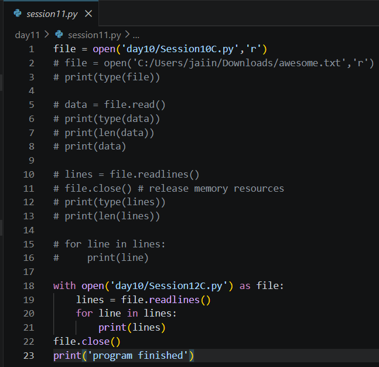
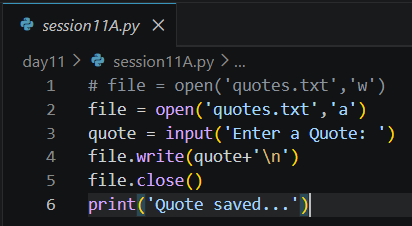
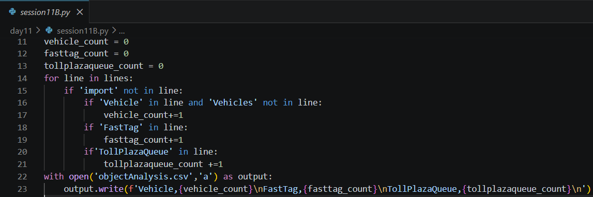
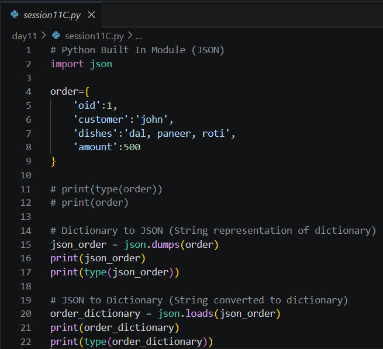
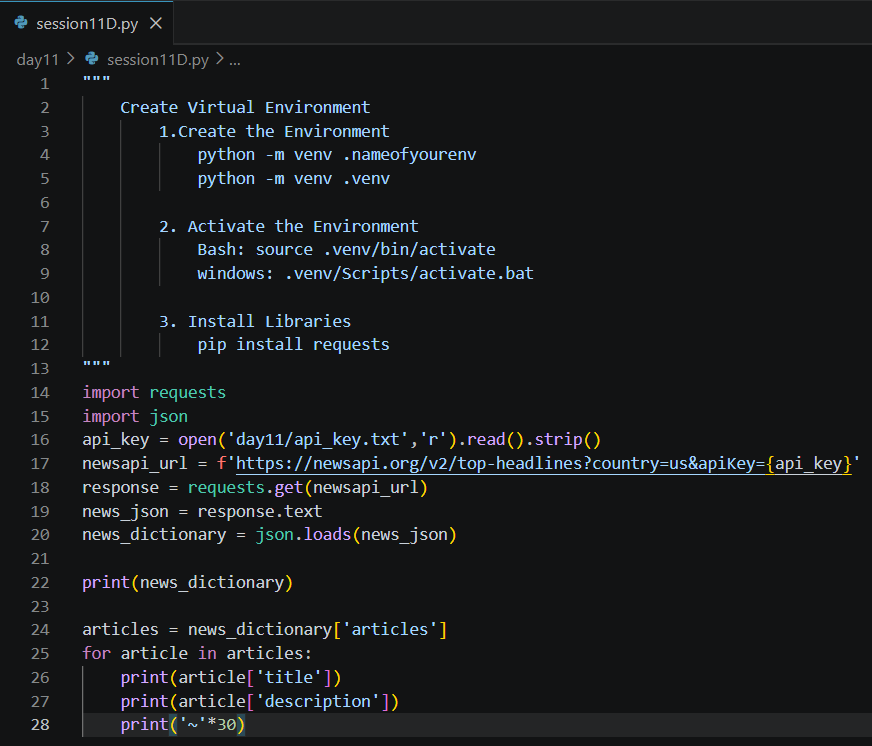
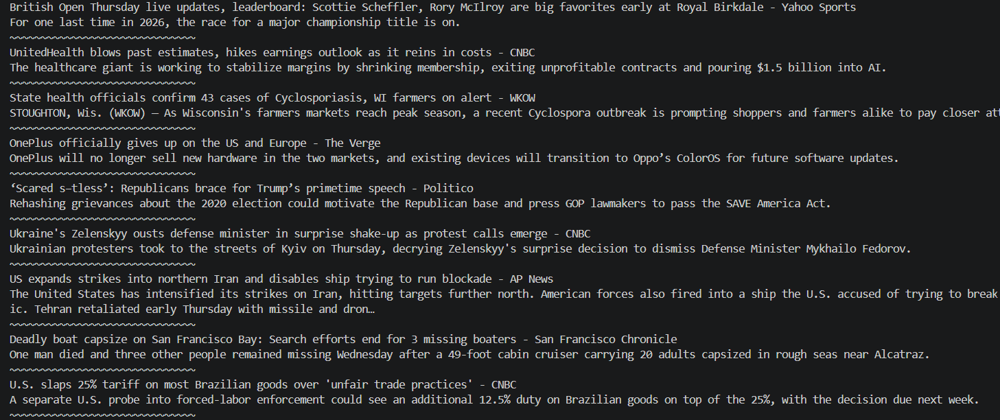

Date: 8th July 2026
Duration: 2 Hours
Training Company: Auribises Technologies
Trainer: Ishant Kumar
Day 11 marked an important transition in the training as we moved beyond writing standalone Python programs and began interacting with external resources. The session introduced file handling for persistent data storage, JSON serialization for exchanging structured data, virtual environments for project dependency management, and REST APIs for retrieving live information from the internet. These concepts form the foundation of modern Python application development.
Through multiple hands-on activities, we learned how Python can read and write files, analyze source code, convert dictionaries into JSON format, communicate with web APIs using the Requests library, and process real-world data returned by online services.
The session began with Python's file handling capabilities. We learned how to open files in different modes, read complete file contents, process files line by line, and safely close files after use. Understanding file operations is essential for creating applications that permanently store or retrieve information instead of relying solely on variables stored in memory.
Different file modes such as Read (r), Write (w), and Append
(a) were demonstrated. We also explored the difference between read(), which loads
the
complete file, and readlines(), which returns each line as an individual element inside a list.
The trainer also introduced the with open() context manager, which automatically closes files after execution and is considered the recommended approach for handling files in Python.

To practice file writing, we created a simple Quote Storage application. The program accepted a quote from the user and stored it inside a text file using Append Mode. This ensured that every new quote was added to the existing file instead of replacing previous entries.
Although simple, this activity demonstrated how Python programs can persist user-generated data and maintain records across multiple executions.

The next activity involved reading an existing Python source file and performing basic analysis on its contents. Instead of manually inspecting the code, the program processed each line to identify occurrences of important classes such as Vehicle, FastTag, and TollPlazaQueue.
The calculated object counts were then exported into a CSV file, demonstrating how Python can automate simple code analysis and generate structured reports from source files.

After understanding file handling, we explored JSON (JavaScript Object Notation), one of the most widely used formats for storing and exchanging structured data between applications. Since APIs commonly return data in JSON format, learning how to work with JSON is an essential Python skill.
The trainer demonstrated how a Python dictionary can be converted into a JSON string using
json.dumps(). Similarly, a JSON string can be converted back into a Python dictionary using
json.loads(). This conversion allows Python programs to easily exchange data with web services
and
external applications.
A sample food order dictionary was used to demonstrate both serialization and deserialization, helping us understand the relationship between Python objects and JSON representations.

The session then introduced Virtual Environments, an important concept in Python project development. A virtual environment creates an isolated workspace where project-specific libraries can be installed without affecting the global Python installation.
We learned how to create a virtual environment using the venv module, activate it on Windows,
and
install external libraries using the pip package manager. This approach helps maintain separate
dependencies for different projects and avoids version conflicts between libraries.
The trainer also explained the difference between Python's built-in modules and third-party packages that must be installed separately.
After setting up the development environment, we used the Requests library to communicate with a REST API over the internet. Using an HTTP GET request, the program connected to the News API and retrieved the latest news headlines in JSON format.
The response received from the server was initially a JSON string. Using the JSON module, the response was converted into a Python dictionary, making it possible to access individual fields and extract useful information from the returned data.

As a practical activity, we developed a News Headlines application that fetched live news articles using the News API. The program parsed the JSON response and displayed the title and description of each article in a readable format.
This exercise demonstrated the complete workflow of making an HTTP request, receiving a server response, converting JSON data into Python objects, and processing the extracted information. It was our first experience integrating an external web service into a Python application.

No separate programming assignment was provided during this session. Instead, the class focused on multiple practical demonstrations involving file handling, JSON processing, virtual environments, and API integration. These activities collectively served as hands-on practice for understanding how Python applications interact with files and external web services.
open() in different modes such as Read, Write,
and
Append.read() and readlines() for reading file
contents.with open() context manager for safe and automatic file handling.json.dumps() and converted them back
using json.loads().pip package manager.Day 11 introduced several concepts that are widely used in real-world Python development. Unlike previous sessions, where most programs worked entirely within Python, this session focused on interacting with external resources such as files and web services. Learning file handling helped me understand how applications permanently store and retrieve information, while JSON showed how data is exchanged between different systems.
The News API activity was particularly interesting because it demonstrated how a Python program can communicate with an online service, receive live information, and process it into a readable format. This was my first experience working with REST APIs, making the session an important milestone in understanding how modern applications fetch and use external data.
Another valuable concept was Virtual Environments, which highlighted the importance of keeping project dependencies isolated. Overall, this session provided a strong foundation for building applications that interact with files, APIs, and third-party libraries, preparing us for more advanced topics in the upcoming training sessions.
The next session will continue exploring Python's capabilities by introducing databases and application development concepts, allowing us to build programs that can store, retrieve, and manage data more efficiently while moving closer to developing complete real-world applications.